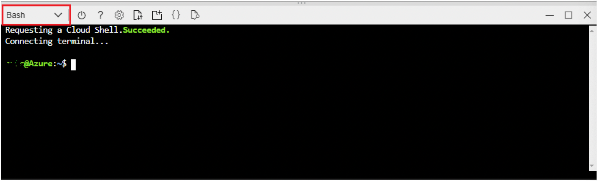
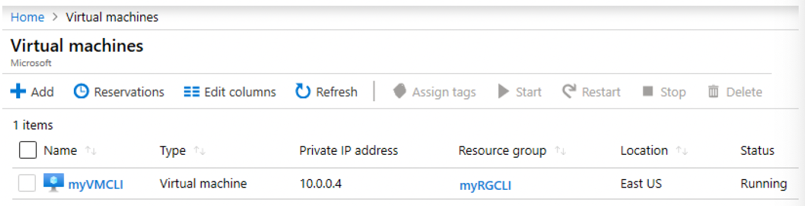
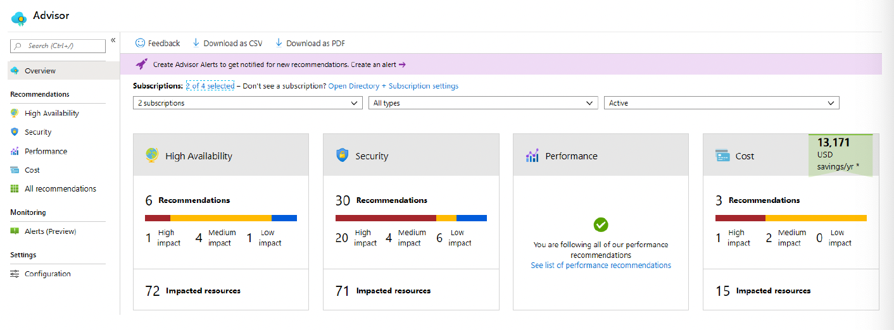
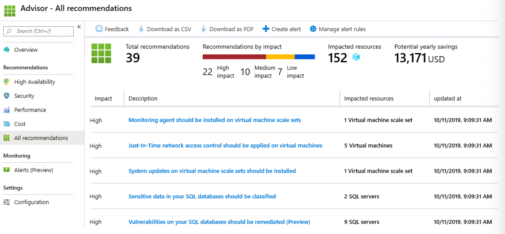

Lab 4: Create a VM with the CLI (10 min)
In this Lab, we will configure the Cloud Shell, use Azure CLI to create a resource group and virtual machine, and review Azure Advisor recommendations.
Task 1: Configure the Cloud Shell
In this task, we will configure Cloud Shell, then use Azure CLI to create a resource group and a virtual machine.
1 - Sign in to the Azure portal.
2 - From the Azure portal, open the Azure Cloud Shell by clicking on the icon in the top right of the Azure Portal.
3 - In the Welcome to Azure Cloud Shell dialog, when prompted to select either Bash or PowerShell, select Bash.
4 - A new window will open stating You have no storage mounted. Select advanced settings.
5 - In the advanced settings screen, fill in the following fields, then click Create Storage:
- Resource Group: Create new resource group
- Storage Account: Create a new account a use a globally unique name (ex: cloudshellxyzstorage)
- File Share: Create a new one and name it cloudshellfileshare
Task 2: Use CLI to create a virtual machine
In this task, we will use Azure CLI to create a resource group and a virtual machine.
1 - Ensure Bash is selected in the upper-left drop-down menu of the Cloud Shell pane (and if not, select it).

2 - Verify the resource group you are using by entering the following command.
az group list --output table
3 - In Cloud Shell enter the command below and make sure that each line, except for the last one, is followed by the backslash (\) character. If you type the whole command on the same line, do not use any backslash characters.
az vm create \
--name myVMCLI \
--resource-group myRGCLI \
--image UbuntuLTS \
--location EastUS2 \
--admin-username azureuser \
--admin-password Pa$$w0rd1234
Note: If you are using the command line on a Windows computer, replace the
backslash (\) character with the caret (^) character.
Note: The command will take 2 to 3 minutes to complete. The command will create a virtual machine and various resources associated with it such as storage, networking and security resources. Do not continue to the next step until the virtual machine deployment is complete.
4 - When the command finishes running, in the browser window, close the Cloud Shell pane.
5 - In the Azure portal, search for Virtual machines and verify that myVMCLI is running.
Quando o comando terminar de ser executado, na janela do navegador, feche o painel do Cloud Shell.
No portal do Azure, procure Máquinas virtuais e verifique se myVMCLI está em execução.

Task 3: Execute commands in the Cloud Shell
In this task, we will practice executing CLI commands from the Cloud Shell.
1 - From the Azure portal, open the Azure Cloud Shell by clicking on the icon in the top right of the Azure Portal.
2 - Ensure Bash is selected in the upper-left drop-down menu of the Cloud Shell pane.
3 - Retrieve information about the virtual machine you provisioned, including name, resource group, location, and status. Notice the PowerState is running.
az vm show --resource-group myRGCLI --name myVMCLI --show-details --output table
4 - Stop the virtual machine. Notice the message that billing continues until the virtual machine is deallocated..
az vm stop --resource-group myRGCLI --name myVMCLI
5 - Verify your virtual machine status. The PowerState should now be stopped.
az vm show --resource-group myRGCLI --name myVMCLI --show-details --output table
Task 4: Review Azure Advisor Recommendations
In this task, we will review Azure Advisor recommendations for our virtual machine.
Note: If you have completed the previous lab (Create a VM with PowerShell), then you have already performed this task.
1 - From the All services blade, search for and select Advisor.
2 - On the Advisor blade, select Overview. Notice recommendations are grouped by Reliability, Security, Performance, and Cost.

3 - Select All recommendations and take time to view each recommendation and suggested actions.
Note: Depending on your resources, your recommendations will be different.

4 - Notice that you can download the recommendations as a CSV or PDF file.
5 - Notice that you can create alerts.
6 - If you have time, continue to experiment with Azure CLI.
Congratulations! You have configured Cloud Shell, created a virtual machine using Azure CLI, practiced with Azure CLI commands, and viewed Advisor recommendations.
Note: To avoid additional costs, you can optionally remove this resource group. Search for resource groups, click your resource group, and then click Delete resource group. Verify the name of the resource group and then click Delete. Monitor the Notifications to see how the delete is proceeding.